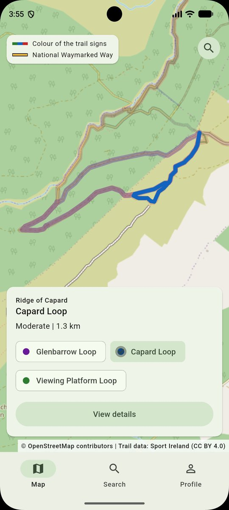
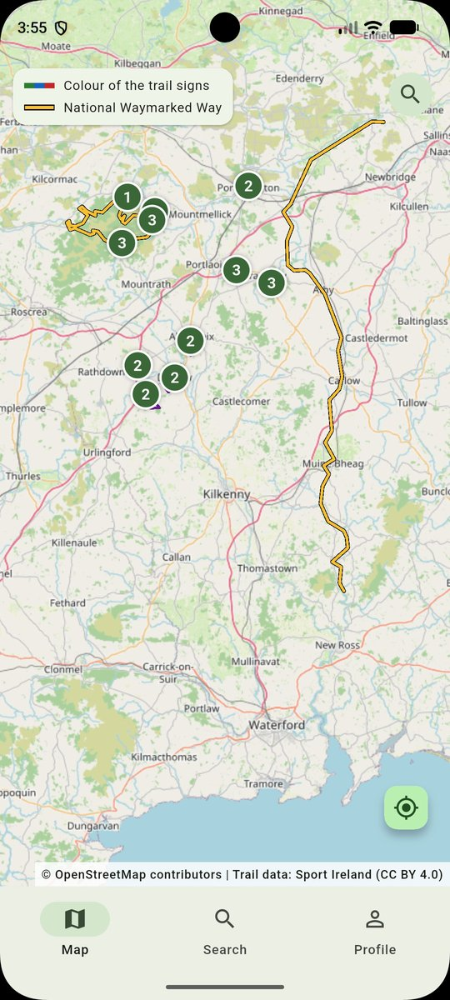
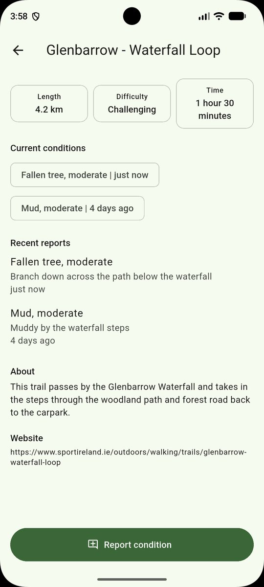
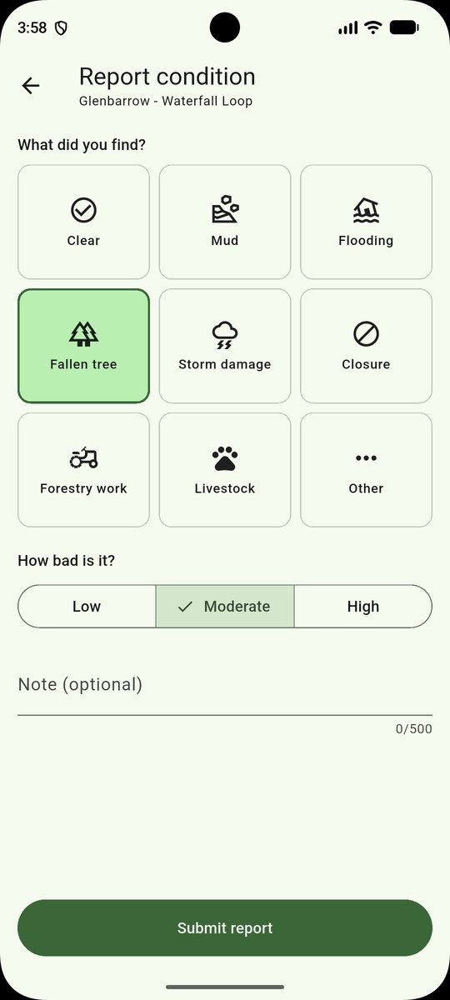
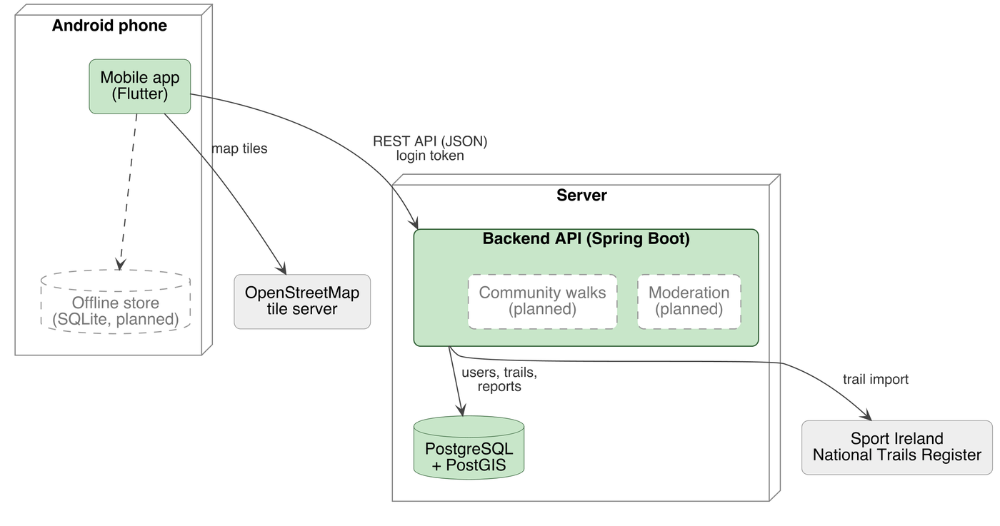

An Android app for walkers in Ireland. See the latest conditions on official trails, report what you find along the way, and soon, join group walks organised by local clubs.

A four-minute walkthrough of release v0.1: exploring the trail map, searching for trails nearby, opening a trail's details, creating an account and reporting a fallen tree.
Mud, flooding, fallen trees and forestry work can close a path at any time, but walkers plan around information that is often out of date. Group walks are spread across club websites, social media and group chats, with no single place to find one.
Every route comes from the Sport Ireland National Trails Register, drawn in the colours of its waymark signs.
Walkers report what they find on a trail, and anyone can read the reports, with or without an account.
Walking clubs and local walkers will organise and join group walks on a trail. Coming in v0.2.
Routes are drawn in the colour of their waymark arrows, so the map matches the signs on the ground.
Routes that start from the same car park are grouped under one pin, with a chooser where routes share a path.
Report mud, flooding, fallen trees, closures and more, with a severity and an optional note.
Length, difficulty and time to complete, the current conditions, and the reports from the last week.
Find trails by name, or the closest ones within 5, 10 or 25 km of where you are.
Create an account to post reports. The login is kept securely on the phone, so you stay signed in.



Each release adds a set of features to the app. Here is what has shipped so far and what is coming next.

Trails are imported from the Sport Ireland register once and stored in PostgreSQL. PostGIS simplifies each route for the map, groups trailheads into sites, and finds the trails near a walker. The app talks to a Spring Boot REST API and draws the routes over OpenStreetMap.
Generated from the code each time the site is published.